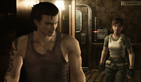
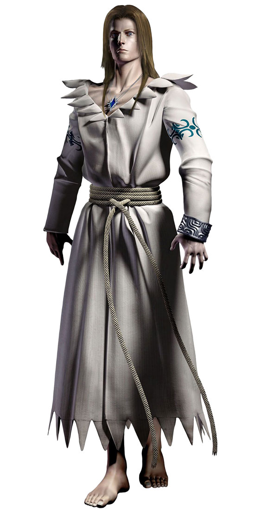

23 กรกฎาคม ปี 1998
เจ้าหน้าที่หน่วย S.T.A.R.S. ทีม Bravo ได้รับคำสั่งให้ไปหาเบาะแสคดีลึกลับที่เกิดขึ้นในเขตภูเขาอาร์คเลย์แต่ในขณะที่เฮลิคอปเตอร์กำลังบินอยู่นั้นเครื่องยนต์เกิดขัดข้องทำให้ต้องลงจอดฉุกเฉินในป่า บริเวณนั้นทีมบราโว่ได้พบกับรถขนนักโทษที่คว่ำอยู่และข้อมูลของนักโทษชื่อ บิลลี่ โคเอน (Billy Coen)
เจ้าหน้าที่ทีมบราโว่ทั้งหมดมี 6 คน คือ
- Enrico Marini หัวหน้าทีม
- Richard Aiken ฝ่ายสื่อสาร
- Edward Dewey ฝ่ายคุ้มกัน
- Kenneth J. Sullivan ฝ่ายลาดตระเวน
- Forest Speyer ฝ่ายจัดการทั่วไป
- Rebecca Chamber ฝ่ายพยาบาล
จากนั้นทีมบราโว่ได้กระจายกำลังเพื่อสืบหาร่องรอย จนรีเบ็คก้าได้พบกับรถไฟขบวนหนึ่งที่เพิ่งถูกปลิงประหลาดโจมตีแถมผู้โดยสารและเจ้าหน้าที่ประจำรถไฟก็กลายเป็นซอมบี้ รีเบ็คก้าพยายามหนีเอาตัวรอดและได้พบกับบิลลี่ผู้ต้องหาคดีฆาตกรรม 23 ศพ บนรถไฟขบวนนี้ก็เป็นจุดจบของสมาชิกหน่วย S.T.A.R.S. รายแรกคือ เอ็ดเวิร์ด ดิวอี้ (Edward Dewey)

บิลลี่และรีเบคก้าพบกันครั้งแรกบนรถไฟ
หลังจากสำรวจภายในรถไฟไปได้สักพัก รีเบคก้าก็ถูกปลิงที่รวมตัวกันเป็นบุคคลปริศนาเข้าโจมตี แต่บิลลี่เข้ามาช่วยไว้ได้ และอยู่ๆรถไฟก็เริ่มเคลื่อนที่เอง
ทางอัลเบิร์ตและดร.วิลเลียมเองก็ส่งหน่วยพิเศษ 2 คนลอบเข้ามาทำลายรถไฟเพื่อป้องกันการแพร่กระจายของไวรัสแต่ถูกปลิงรุมฆ่าตายเสียก่อน
ไม่นานรถไฟขบวนนี้ได้เคลื่อนตัวไปสิ้นสุด ณ ศูนย์วิจัยย่อยของอัมเบลล่าที่ตั้งอยู่ไม่ไกลจากคฤหาสน์สเปนเซอร์มากนัก
ในระหว่างรีเบคก้าและบิลลี่หนีเอาตัวรอด บิลลี่ก็ได้เล่าเหตุการณ์เกี่ยวกับคดีของตัวเอง ว่าจริงๆแล้วเขาไม่ได้เป็นคนลงมือเพียงแต่เขาเป็นทหารนาวิกหน่วยเดียวกับผู้ที่ก่อเหตุเท่านั้น
เมื่อมาถึงศูนย์วิจัยของอัมเบลล่า รีเบคก้าได้พบกับรูปภาพของ ดร.เจมส์ซึ่งเป็นคนที่กลายเป็นปลิงมาทำร้ายตัวเอง ส่วนทางอัลเบิร์ตและ ดร.วิลเลียมก็ได้พบกับดร.เจมส์ที่ออกมาท้าทายและแสดงให้เห็นว่า ปลิงที่โจมตีขบวนรถไฟเกิดมาจากการที่ดร.เจมส์ต้องการล้างแค้นอัมเบลล่า
ในระหว่างที่รีเบคก้าและบิลลี่กำลังสำรวจศูนย์วิจัยใต้ดินของอัมเบลล่า ทั้งคู่ก็ต้องแยกทางกันเนื่องจากมีสัตว์ประหลาดมาทำร้ายจนทำให้บิลลี่ตกน้ำไป ระหว่างที่รีเบคก้ากำลังตามหาบิลลี่ ก็ได้มาพบกับเอนริโก้หัวหน้าทีมบราโว่ซึ่งเขาได้บอกกับรีเบคก้าว่ามีคฤหาสน์ที่มีความลับเกี่ยวข้องกับบริษัทอัมเบลล่าอยู่ไม่ไกลจากศูนย์วิจัย แต่รีเบคก้าต้องการที่จะหาตัวบิลลี่ให้เจอก่อนแล้วจะตามไปทีหลัง

Dr. Marcus หลังจากที่ปลิงที่ติดเชื้อได้เข้าไปในร่างกาย
หลังจากที่รีเบคก้าเจอตัวบิลลี่อีกครั้งแล้วก็ได้พบกับดร.เจมส์ซึ่งเขาได้เล่าเรื่องราวทั้งหมดให้กับทั้งสองคนฟัง รวมไปถึงความคิดที่จะล้างแค้นอัมเบลล่าด้วยการปล่อยปลิงที่ติดเชื้อเหล่านี้ไปแพร่กระจายในศูนย์วิจัยของอัมเบลล่า แต่ด้วยไวรัสที่อยู่ในร่างกายเขามันรุนแรงเกินกว่าที่เขาจะต้านทานไหวจนทำให้เขากลายร่างเป็น Queen Leech และเริ่มอาละวาด พอทั้งคู่ปราบ Queen Leech ได้ รีเบคก้าก็ปล่อยให้บิลลี่หนีไป ส่วนรีเบคก้าตามไปสมทบกับทีมบราโว่ที่คฤหาสน์สเปนเซอร์
ที่มา : http://residentevil.wikia.com
https://www.online-station.net/pc-console-game/view/63085